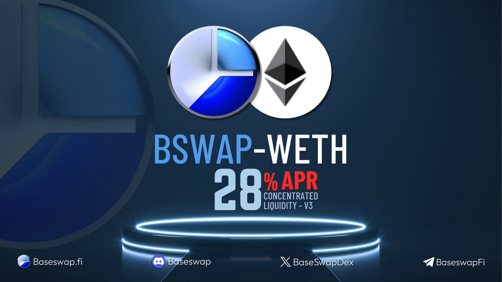

## The Curious Case of the Base Swap: Plumbing the Depths of DeFi Liquidity
Remember that time I tried to bake a sourdough starter? It was supposed to be this beautiful, bubbling ecosystem of wild yeasts, a miniature world thriving on flour and water. Instead, I got a sad, slimy puddle. Turns out, fostering a thriving ecosystem, whether it’s sourdough or a DeFi liquidity pool, takes more than just throwing ingredients together. And that brings us to base swap liquidity pools – fascinating, complex, and sometimes, just as frustrating as my sourdough experiment.
Base swaps, for those not fluent in the cryptic language of decentralized finance (DeFi), are essentially automated market makers (AMMs) that allow for the exchange of assets across different blockchains. Think of them as inter-blockchain bridges, but with a twist – they rely on liquidity pools to facilitate these exchanges. Now, these pools aren't just filled with random crypto; they're carefully constructed ecosystems with their own economic logic, and understanding that logic is key to understanding their success (or failure).
One of the most intriguing aspects, at least to me, is how the economics of these pools differ from, say, a Uniswap pool on a single chain. In a typical Uniswap-style pool, you've got a relatively straightforward equation: supply and demand determine price. But base swaps introduce a whole new layer of complexity. You've got to consider bridging fees, cross-chain transaction costs, and the inherent risks of moving assets between different networks. Suddenly, your simple supply-demand curve morphs into something resembling a Jackson Pollock painting— chaotic, beautiful, and utterly perplexing at first glance.
And that's where things get interesting (and slightly stressful). How do you incentivize liquidity providers (LPs) to contribute to these pools when the risks are arguably higher? High rewards are a common approach, of course. But offering excessively high APYs can attract “short-term tourists” who pull out their liquidity at the slightest sign of trouble, leaving the pool vulnerable. It's a bit like trying to build a stable sourdough starter with unstable ingredients – eventually, the whole thing collapses.
I’ve spent countless hours poring over whitepapers and code, and frankly, sometimes I feel like I'm chasing shadows. The intricacies of tokenomics, the ever-shifting landscape of DeFi, it’s all enough to make you want to stick to good old-fashioned baking. Yet, I find myself pulled back in. Maybe it’s the challenge, the intellectual puzzle of it all. Maybe it's the allure of building something truly decentralized and transformative. Or perhaps it’s just the sheer stubbornness to finally bake a decent loaf of sourdough... and to finally understand these base swaps!
But amidst the complexities, I've glimpsed a potential solution. The key, I suspect, lies in creating more sophisticated incentive mechanisms – mechanisms that reward long-term commitment, penalize rug-pulls, and actively promote the health and stability of the pool. Think of it as creating a sourdough starter environment that encourages the right kind of microbial growth – the kind that results in a tangy, delicious loaf, not a slimy disappointment.
This article hasn't provided definitive answers, to be frank. It’s more of a reflection, a personal journey into the messy, beautiful world of base swap liquidity pools. My sourdough starter is still, well, a work in progress. And so, too, is my understanding of these intricate economic models. But the process of exploring, questioning, and slowly piecing together the puzzle is, in itself, rewarding. It's a reminder that even in the complex world of DeFi, there's always something new to learn, something new to discover – and sometimes, a good loaf of bread helps with the learning process.

## Diving Headfirst (and a Little Scared) into Base Swap's Liquidity Pools
Okay, confession time. I'm not a crypto guru. I don't live and breathe blockchain technology. I'm more of a "curious observer" who occasionally stumbles into the rabbit hole – usually after seeing something utterly baffling on Twitter. And that’s exactly how I ended up knee-deep in Base Swap’s liquidity pools.
It started with a meme, honestly. A ridiculously over-caffeinated Shiba Inu explaining the wonders of decentralized exchanges (DEXs). I clicked, I read (mostly skimmed), and then… I was hooked. Not by the Shiba Inu, but by the intriguing concept of liquidity pools. These seemed like magical money-generating machines, right? Wrong. Or maybe… partially wrong? That’s where things get interesting.
Let’s break it down, shall we? Imagine a lemonade stand, but instead of lemonade and cookies, you’re trading cryptocurrencies. Base Swap, like other DEXs, acts as this digital lemonade stand. But how does it keep the virtual “lemonade” flowing? That's where the liquidity pools come in.
These pools are essentially big buckets filled with pairs of tokens. Let's say ETH and USDC. People who want to swap ETH for USDC (or vice versa) dip into the pool. They take some ETH, leaving behind an equivalent amount of USDC (based on the current price ratio), or the other way around. Simple, right?
Well, not entirely. The genius (and the slight madness) lies in the incentives. People who provide these tokens to the pool – the "liquidity providers" – earn fees from every swap. Think of it as a commission on every digital lemonade sale. It’s a win-win, theoretically. Traders get instant access to swaps, and liquidity providers earn passively. But… there’s always a but, isn't there?
Impermanent loss. This is the scary monster lurking under the digital lemonade stand. It happens when the price of the tokens in your pool changes significantly since you deposited them. If the price ratio shifts dramatically, you might end up with less value than if you had just held onto your tokens individually. It’s like accidentally selling your lemonade ingredients at a loss because of a sudden lemon shortage! I know, stressful.
So, is it all worth it? This is where my internal debate begins. The potential for passive income is alluring, almost hypnotically so. The thrill of contributing to a decentralized system feels strangely rewarding. But the risk of impermanent loss keeps me up at night – slightly less than the fear of my cat accidentally knocking over my laptop.
After spending hours poring over articles and forum discussions, I’ve come to a messy, unpolished conclusion. Liquidity pools aren't a get-rich-quick scheme. They are a sophisticated, potentially profitable, but undeniably risky venture. It’s a bit like investing in a startup – high risk, high reward, and a whole lot of uncertainty.
This journey into Base Swap’s liquidity pools hasn't given me all the answers, but it’s given me something far more valuable: a healthy dose of skepticism tempered with cautious optimism. It’s taught me that the world of decentralized finance is complex, fascinating, and definitely not for the faint of heart. And maybe, just maybe, I’ll finally understand that Shiba Inu meme one day. Until then, I’m sticking to my slightly less volatile lemonade stand – the one with the actual lemons.
## Decoding the Mystery (and Mild Confusion) of Base Swap Pool Fees
So, you’re diving into the world of decentralized finance (DeFi), eh? Brave soul. I remember my first foray – it felt like trying to decipher a hieroglyphic inscription while simultaneously juggling flaming torches. Base Swap pools, with their seemingly Byzantine fee structures, were a particularly fiery torch. But after a few (okay, many) hours of head-scratching, I think I finally grasped the basics – and maybe, just maybe, I can help you avoid the same fiery fate.
The core idea behind Base Swap pools – essentially, automated market makers (AMMs) living on Base – is elegant: facilitate fast, cheap token swaps. But how do they stay afloat? Fees, my friend, fees. And these aren't your simple 0.3% charges. Oh no, they're more nuanced, more... interesting.
Let's start with the obvious: trading fees. This is the bread and butter, the fuel that keeps the engine running. These fees are usually a percentage of the trade amount, varying between pools and even fluctuating based on things like liquidity levels and volatility. Think of it like a toll booth on the highway to decentralized riches – you pay to use the road, contributing to its upkeep. Makes sense, right?
But here’s where things get a bit…murky. Many pools implement a tiered fee structure. What does that even mean? Imagine a nightclub with different areas: the main dance floor is cheap, but VIP access costs more, offering perks like a dedicated bartender and less elbow-to-elbow contact. Similarly, some pools offer different fee tiers, potentially with reduced slippage (that annoying difference between expected and actual exchange rates) in exchange for higher fees. It's a trade-off: speed and certainty versus cost savings.
Then there's the question of what happens to these fees. Are they burned, contributing to deflationary tokenomics? Are they distributed to liquidity providers (LPs) as rewards? Or is it some more complex system that makes you wonder if you accidentally stumbled into a cryptography convention disguised as a financial market? The answer, sadly, isn't always simple. It varies from pool to pool, adding to the initial feeling of overwhelming complexity. It's like trying to understand the lyrics to a really complicated death metal song – you kinda get the gist but you’re not totally sure.
And finally, there’s the ever-present lurking fear: hidden fees. I've personally been caught off guard by unexpected charges buried deep in the fine print (or rather, the often dense smart contract code). It's frustrating, like finding a hidden ingredient in your supposedly healthy smoothie that you definitely weren't expecting. So, always do your homework, read the documentation carefully, and maybe even double-check it with a DeFi-savvy friend (because, let's face it, we all need a DeFi buddy).
So, where does this leave us? Well, understanding Base Swap pool fee structures isn't a walk in the park; it’s more like a challenging hike with some stunning views along the way (once you finally reach a viewpoint, that is). It’s a world of tiered fees, varying tokenomics, and the ever-present possibility of hidden costs. But it’s a world worth exploring – if you're patient, detail-oriented, and equipped with a good dose of healthy skepticism (and maybe a strong cup of coffee).
This wasn't just a breakdown of fees; it was a reflection on the messy, often confusing, yet ultimately rewarding journey of learning something new in the wild west of DeFi. And I hope that, somewhere in this slightly rambling exploration, you found a little clarity amidst the chaos. Now, if you'll excuse me, I'm off to decipher another smart contract. Wish me luck!
## The Carrot and the Stick (and Maybe a Unicorn?) in Base Swap LPing
Okay, confession time. I almost didn't write this. See, I’m not a DeFi wizard. I’m just a regular person who got seduced by the siren song of yield farming – a song that, let's be honest, sometimes sounds more like a slightly off-key foghorn. But I dove in, headfirst, into the world of Base Swap liquidity pools (LPs), hoping to turn a few measly dollars into… well, more measly dollars, hopefully with slightly less measly-ness.
The whole thing feels a bit like trying to win a rigged carnival game. You know the odds are stacked against you, but the lure of that giant stuffed unicorn (or, in this case, passive income) is just too tempting to resist. So, what are the actual incentives for us poor, hopeful LPs in this wild west of decentralized exchanges?
Well, the most obvious one is, of course, the fees. You provide liquidity, the traders swap tokens, and you get a cut of the transaction fees. Sounds simple, right? In theory, yes. In practice? It can feel like chasing butterflies in a hurricane. Sometimes the fees are plentiful; other times, you’re staring at a screen that’s as exciting as watching paint dry.
Then there's the potential for impermanent loss (IPL). This is where things get really fun. IPL is basically the risk of losing money if the price of the tokens in your LP pair diverge significantly. It’s like investing in a volatile stock – exciting, potentially lucrative, but with the ever-present threat of watching your investment plummet faster than a lead balloon. I’ve had moments of sheer panic, staring at my portfolio, convinced I'd made a catastrophic mistake and would end up eating ramen for the next decade.
But wait! There's more! Some Base Swap ecosystems offer additional incentives, like boosted rewards, token emissions, and even… wait for it… staking rewards! It’s a multi-layered reward system, like a delicious, complex cake (with the potential for a hidden ingredient that's surprisingly bitter, representing IPL). These extra incentives can definitely sweeten the deal, making the risk seem a little less… terrifying.
But here’s where my inner cynic (who, let’s be honest, is always lurking just beneath the surface) pops up: Are these incentives truly sustainable? Are we being lured into a temporary gold rush, only to find the gold has turned to fool's gold once the incentives dry up? These are questions that keep me up at night. I’m not even going to lie, it's kept me up some nights.
So, what’s the conclusion? Well, honestly, I don't have a tidy, perfect answer. This whole Base Swap LP experience has been a wild ride – a rollercoaster of hope, fear, and the occasional mild existential crisis. It's taught me about the complexities of DeFi, the importance of risk management, and the surprising resilience of my caffeine tolerance.
The journey of writing this article hasn’t just been about explaining incentives; it's been about processing my own experiences, questioning my assumptions, and acknowledging the inherent uncertainties involved. It’s a bit like that carnival game: you might win, you might lose, but the ride itself is… well, let’s just say it's definitely memorable. And hey, maybe, just maybe, I'll eventually win that giant stuffed unicorn. A person can dream, right?
## The Great Base Swap Balancing Act: Or, Why My Crypto Dreams Keep Crashing and Burning (Slightly)
Okay, so picture this: It’s 3 AM. I’m fueled by lukewarm coffee and the unshakeable belief that I’m about to crack the code to financial freedom (a belief that's usually accurate... about 2 AM, before reality sets in). I’m staring at my Base Swap interface, meticulously trying to time the perfect swap to capitalize on some fleeting market anomaly. Spoiler alert: I didn't. But that near-miss, that thrilling chase, is exactly what keeps me coming back. And it’s also what got me thinking about the delicate dance of supply and demand within Base Swap.
Base Swap, for the uninitiated (and even for some initiates who, like me, still occasionally stumble), is a decentralized exchange running on the Base network. It's a beautiful, chaotic ecosystem where the price of tokens shifts constantly, driven by the ebb and flow of buyers and sellers. Getting a good deal isn't just about timing; it’s about understanding the underlying forces at play – the invisible hand of the market, if you will (though sometimes it feels more like a slightly arthritic, caffeine-addled hand).
One of the biggest challenges, and something I've personally wrestled with, is the unpredictable nature of liquidity. You might see a seemingly perfect opportunity – a token you're eyeing dipping below your target price – only to find that the available liquidity is minimal. Suddenly, your carefully crafted plan crumbles, like a poorly constructed sandcastle at high tide. The frustration is real. I've been there, screaming silently at my laptop, questioning my life choices.
But then I remind myself: that's precisely the beauty (and beast) of a decentralized exchange. There’s no central entity controlling supply, no shadowy figure manipulating prices (at least, not obviously). It’s pure, unadulterated supply and demand – a raw, sometimes brutal, reflection of market sentiment.
This raises a fascinating question: How do we navigate this wild west of decentralized finance? Is it even possible to "balance" supply and demand? The answer, I think, is nuanced. You can’t control the market, not really. But you can certainly influence your own participation within it.
For instance, understanding order books is crucial. Looking beyond the current price and seeing the depth of available buy and sell orders gives you a better sense of potential price movements. Thinking strategically about order types – limit orders versus market orders – can also help. Limit orders let you specify a price, offering more control but risking your order not being filled. Market orders guarantee execution but at whatever the current price is, potentially costing you more. It's a constant weighing of risk and reward. It's like choosing between a perfectly ripe avocado (limit order) and the slightly bruised but readily available one (market order). The choice depends on your appetite for risk and patience.
And then there's the question of network fees. These are a hidden cost impacting supply and demand. Higher gas fees can discourage smaller trades, skewing the order book and making it harder to find ideal prices. It's a reminder that the theoretical perfection of decentralized finance is constantly being nudged by the realities of the network itself.
So, where does this leave me, after my late-night crypto meditation? Well, I’m still far from mastering the art of Base Swap trading. I'm still accidentally paying too much for gas, still getting out-maneuvered by bots (I suspect), and still occasionally questioning all my decisions. But I’ve gained a deeper appreciation for the complexities of balancing supply and demand in a decentralized system. It’s not about perfect control; it’s about informed participation, strategic thinking, and maybe, just maybe, a little bit of luck. And hopefully, a little less lukewarm coffee at 3 AM.
## The Curious Case of the Base Swap Banana: Can Rewards Really Be Sustainable?
So, I was at the grocery store the other day, staring at a ridiculously overpriced bunch of organic bananas. They were, like, five dollars. Five dollars! For bananas! It struck me then – the whole thing felt a bit like the promise of some DeFi base swap rewards programs. Shiny, appealing, maybe even a little unsustainable in the long run.
I'm not a financial expert, mind you. I'm more of a "accidentally-became-interested-in-crypto-because-a-friend-explained-NFTs-and-now-I'm-slightly-obsessed" kind of person. But lately, I’ve been pondering the economics of these generous base swap rewards. They seem almost too good to be true, and, well, sometimes things that seem too good to be true are too good to be true. Like those five-dollar bananas.
The allure is obvious. Earn a juicy percentage just for swapping tokens? Sign me up! It's like getting paid to move money around – a dream for anyone who's ever felt the soul-crushing weight of transaction fees. And the projects offering these rewards often boast about their innovative technologies, promising a bright future where everyone profits. But is it really that simple?
One major concern is the sustainability of these rewards. How long can a protocol afford to shower users with such generous payouts? It's tempting to think of it as a bottomless well of cryptocurrency, but that's rarely the case. Are they relying on hefty initial investments? Are they hoping for explosive growth that might never materialize? Or is there a more ingenious, sustainable model at play that I'm simply too clueless to grasp?
I've read whitepapers. I've watched YouTube explanations. I've even ventured into the occasionally hostile wilds of crypto Twitter. And honestly? I'm still a little fuzzy on the details. Some projects seem incredibly transparent, laying out their tokenomics with clear, concise explanations. Others… well, others feel a bit more like a magic trick, where the rabbit (our rewards) appears and disappears as mysteriously as it pleases.
Perhaps the problem lies in my own biases. I’m used to traditional financial systems where returns are, shall we say, more… measured. The idea of explosive growth and quick riches feels inherently unstable, even if it’s backed by blockchain technology. It reminds me of those get-rich-quick schemes my grandma always warned me about (though, admittedly, those usually involved Nigerian princes, not smart contracts).
And yet, there’s a part of me that wants to believe. The potential of decentralized finance is undeniably exciting. The idea of a system that’s fair, transparent, and accessible to everyone is incredibly appealing. Maybe these base swap rewards are a genuine attempt to bootstrap a new, more equitable financial landscape.
So, where does that leave us? With more questions than answers, honestly. Are base swap rewards a sustainable model, or just a temporary sugar rush in the crypto world? I don't have a definitive answer. Maybe it's different for every project. Maybe the organic bananas were just overpriced. But one thing's for sure: a healthy dose of skepticism, coupled with a healthy amount of curiosity, is crucial when navigating the exciting—and sometimes confusing—world of decentralized finance. And maybe, just maybe, it's worth remembering that sometimes, the best things in life aren't free (even if they seem like it at first). Even bananas.
## Base Swaps: The Unexpected Price Tag of Decentralized Finance
Okay, so picture this: I'm finally diving into DeFi, feeling like a total crypto-ninja. I'm all set to swap some USDC for a promising new meme coin, convinced I’m about to become the next Satoshi. Then bam – slippage. Not just a little slippage, a slippage so brutal it felt like someone stole my lunch money… and my grandma’s dentures. That’s when I started to really understand base swaps. And honestly, it was a humbling experience.
For those not fluent in the jargon, a base swap is, simply put, the underlying exchange rate for swapping tokens on a decentralized exchange (DEX). It's the theoretical price, before all the pesky real-world factors like liquidity and demand come crashing down on your perfectly crafted trade. Think of it like the sticker price on a new car – the dream, before the dealer adds all those "necessary" extras. Except, in this case, the extras are things like transaction fees, slippage, and sometimes, sheer market volatility.
And that's where things get interesting – and occasionally infuriating. Because the base swap, while theoretically simple, has a surprisingly profound impact on token pricing. On the surface, it seems straightforward: the base swap reflects the ratio of the two tokens involved. But the reality is far messier. The base swap isn't some immutable law of the DeFi universe; it's a constantly shifting target, influenced by a complex dance of algorithmic pricing, liquidity pools, and – let's be honest – pure market speculation.
So, what causes these wild swings? Well, a major player is liquidity. Imagine trying to swap a tiny, obscure token for a major blue-chip like ETH. The liquidity pool for that obscure token might be ridiculously shallow, meaning even a small trade could drastically alter the price. This results in massive slippage – that dreaded moment where your desired swap price turns into something resembling a medieval torture device.
Another factor? Automated Market Makers (AMMs). These algorithmic marvels are fantastic in theory, automatically providing liquidity and facilitating trades. However, their very nature – constantly adjusting prices based on the ratios within the liquidity pool – can contribute to volatile base swaps. It's a beautiful, terrifying dance of supply and demand, played out in lines of code.
This all brings me to a question that’s been nagging at me: is the base swap a fair representation of a token’s actual value? I’m not so sure. While it provides a theoretical benchmark, it doesn't account for the broader market context, investor sentiment, or even news headlines. Is a token truly worth what its base swap suggests, or is that just a snapshot in time, distorted by the mechanics of the DEX itself?
Maybe it's like trying to judge a restaurant based solely on its menu. The menu might promise deliciousness, but the actual experience – the service, the ambiance, the overall vibe – is what truly matters. Similarly, the base swap is just one piece of the puzzle; it doesn't tell the whole story of a token's value.
So, my journey into the world of base swaps hasn't exactly been a smooth one. It’s been more like a rollercoaster ride with unexpected drops, exhilarating climbs, and the occasional near-death experience. But I've learned a thing or two along the way. I’m still not a DeFi guru (far from it!), but now I approach trades with a healthy dose of skepticism and a better understanding of those hidden forces that shape token prices. And, most importantly, I’ve learned to appreciate the subtle nuances of the seemingly simple base swap. It's not just a price; it’s a window into the wild, wild west of decentralized finance.
## The Great Base Swap Pool Drain: My Accidental (and Slightly Panicked) Liquidity Lesson
Remember that time you went to buy milk, only to find the dairy aisle completely barren? That feeling of mild panic, the gnawing suspicion that some kind of milk apocalypse was unfolding? That’s sort of how I felt when I started digging into the risks of liquidity drains in Base Swap pools. Okay, maybe not exactly like a milk apocalypse, but close enough to warrant a blog post, right?
I’ve been dabbling in decentralized finance (DeFi) for a while now. I’m not a whale, more like a minnow splashing around in the crypto ocean, cautiously exploring the reefs and hoping not to get eaten by a larger, more sophisticated fish. Base, with its relatively low fees, seemed like a friendly enough shallow pool to play in. I even dipped my toes into a few Base Swap pools, providing liquidity to earn those sweet, sweet trading fees.
But then, the nagging doubts started creeping in. What if, in the unpredictable world of crypto, a sudden surge of withdrawals left the pool bone dry? What if my liquidity was trapped, stranded in a digital desert? The thought, frankly, gave me a bit of a stomach ache.
Liquidity drains in these pools aren't some theoretical edge case. They're a very real risk. Imagine a scenario where a significant event causes a mass exodus of users wanting their funds back. Maybe a rug pull on a related project spooks investors. Maybe some celebrity shill goes wrong, turning the tide on sentiment. Or maybe – and this is the scariest thought – some completely unforeseen black swan event happens. Suddenly, everyone wants out, and there's not enough liquidity to facilitate all those withdrawals. The result? Your assets could be locked, potentially losing value in the process, or at the very least, you face delays in getting your money back. It's a bit like being stuck in a traffic jam on the highway to your financial freedom.
Now, I’m not saying we should all abandon Base Swap pools in a panic. That would be ridiculously dramatic, even for me. They offer attractive yields and contribute to a vibrant DeFi ecosystem. But the risk is there, lurking like a crypto kraken ready to pounce. And ignoring that risk is, in my humble opinion, incredibly unwise.
So, what can we do about it? Well, one thing I've learned is that diversification is key. Don't put all your eggs – or rather, your crypto eggs – in one basket. Spread your liquidity across multiple pools, even across different chains. It’s like having multiple sources of milk – you’re less likely to be caught completely empty-handed if one source dries up.
Another thing to consider is the impermanent loss factor. This is a risk inherent to providing liquidity and needs careful consideration. Essentially, you run the risk of losing more money than you'd have if you simply held your assets. It's not a drain specifically, but a constant, potential loss, that deserves acknowledgement. It's almost like paying insurance against the milk apocalypse!
Honestly, writing this article has been a bit of a self-therapy session. I started with a vague feeling of unease, and now, I feel a bit more informed and, dare I say, empowered. This isn't a definitive guide to navigating the treacherous waters of DeFi liquidity, far from it. But it’s a reminder to stay alert, stay informed, and to always approach the crypto world with a healthy dose of skepticism and a hearty helping of caution. Because, let’s be honest, the last thing you want is to be left staring at an empty dairy aisle – or, worse yet, an empty crypto wallet. So, go forth, my fellow DeFi explorers, and may your liquidity pools always remain delightfully full.

## Base Swap's Liquidity Conundrum: My Quest for Deeper Pools
Okay, so picture this: You're trying to swap your meticulously accumulated SHIB for a slightly less meme-y token, maybe something with actual utility, like… I don't know, a decent stablecoin. You hit the swap button on Base Swap, and… whimper. The slippage is enough to make you question all your life choices. Sound familiar? Yeah, me too. That's what sparked this whole "deep dive" into improving Base Swap's liquidity. (It's more of a shallow wade, honestly. I'm not a blockchain wizard.)
The Base network is exciting, no doubt. It's low-cost, relatively fast, and has the potential to onboard a huge chunk of the crypto-curious. But the success of any DEX, and Base Swap is no exception, hinges on something critical: deep, robust liquidity pools. Without it, you're basically running a lemonade stand in a desert – lots of potential customers, but nothing to sell them.
Now, the obvious solutions are the usual suspects: incentivizing liquidity providers (LPs) with higher rewards, offering attractive APRs, etc. But is that truly sustainable? Throwing money at the problem feels a bit like patching a leaky boat with duct tape and hope. It might work for a while, but eventually, the metaphorical water will start pouring in again.
What about exploring alternative incentive structures? Maybe we could think outside the typical "APR-only" box. I’ve been pondering token-based vesting schedules for LPs, where they earn tokens over time based on their contribution, rather than just immediate APR rewards. This might attract long-term players, encouraging more stable liquidity.
Another idea, and I’m really throwing this out there, is incorporating some kind of "liquidity insurance" for LPs. We’ve all seen those horror stories of impermanent loss wiping out someone's investment. If there was a system in place – perhaps underwritten by a DAO or a dedicated insurance fund – to partially mitigate those losses, it could encourage participation. It’s a complex beast, I know, but the potential payoff is huge.
Of course, there's the elephant in the room: the problem of fragmented liquidity. You have all these different DEXs on Base, each vying for a piece of the pie. It's like having a million tiny lemonade stands instead of one big, bustling market. Could we explore some kind of cross-chain or cross-DEX liquidity aggregation? Imagine a system where a single interface pulls liquidity from multiple sources, ensuring deeper pools across the board. Sounds like a project for a team of rocket scientists, though.
This whole journey started with a simple frustration—a frustratingly high slippage fee. But it’s turned into something more. It’s a reminder that the decentralized finance ecosystem is still evolving, still searching for the perfect balance between incentives, security, and user experience. There are no easy answers, and frankly, some of my ideas might be utterly bonkers. But it’s the brainstorming, the questioning, the constant striving for improvement that makes this whole space so endlessly fascinating. So yeah, maybe my quest for deeper Base Swap liquidity pools hasn't yielded a definitive solution yet, but it’s sparked a lot of thought – and hopefully, some useful discussion. And that, my friends, is already a win.
tags: Finance, Economics, DeFi, Decentralized Finance, Liquidity Pools, Base Swaps, Algorithmic Trading, Market Making, Financial Modeling, Cryptocurrency